Settings
Design version: 1.0.0, direction B · Reach (2026-11-17). Planned design for release 1.0.0; the app is built to match it. Includes the Settings structure and the device coverage accepted on 2026-11-17 (SETTINGS-PLAN.md), and the Last Photo viewer and the Photo Details redesign of 2026-11-18.
Settings holds what is set once. It opens from Q on iPhone, and from its own button on iPad, on the iPhone Duo inner display and before the camera is ready. No page is more than two levels below Settings. This is the structure accepted on 2026-11-17; the review, the reasons and the decisions are in SETTINGS-PLAN.md, and the tree is in settings-tree.html.
The list
| Group | What it is | Rows |
|---|---|---|
| (first row) | Presets (always shown; value: 2 Saved or None Saved) | |
| Photos | What each photo is saved as | Formats · HEIF and JPEG Copies · Photo Size (when a lens offers sizes) · Mirror Front Camera (when there is a front camera) |
| Privacy | What each photo says | Details in Each Photo · Sign Each Photo |
| Camera | How the camera focuses and exposes | Fast Shutter · Focus on Faces |
| Screen | What the screen shows | Start in Clean View · Viewfinder Overlays · Show Processed Marker · Night Mode · Red Viewfinder · Live Activity (where offered) |
| More | Accessibility · Honesty · About and Licenses |
Rules
- A row is shown or not by the device only. No row appears or disappears when a switch is changed, so the list never moves under a finger or under VoiceOver focus.
- Every row that opens a page shows its value. A value that does not fit beside its title wraps under it, at every text size.
- On the list an explanation is one sentence, two where issue 80 or honesty needs it. No sentence says what the default is. Longer text is on the Honesty and Accessibility pages. Every explanation here is a draft for the Honesty review.
- Search finds each setting by its name and by keywords, and answers a search for a camera control with where that control is.
- Each page and row has a stable identifier, used by search, by All Photo Settings on the Photo Format sheet, and later by links into Settings.
Changed from 0.3.0
| Change | Why |
|---|---|
| Manual Controls switch removed | It is a shooting control and now has its camera button (issue 77). Search for it points to the camera. |
| Search added, with keywords and pointers to the camera | Any setting on any page can be found by name or by another word for it. |
| Remove All Optional Details and Choose Details are one row, Details in Each Photo | One decision had two rows. The page starts with the master switch; the row’s value shows its state. |
| Look and File Options are one page, HEIF and JPEG Copies, always shown | Both apply only to the copies. With RAW only as the default, neither row existed on a fresh install. |
| Mirror Front Camera moved to Photos | It changes the saved photo, not the camera screen. |
| Start in Clean View, Viewfinder Overlays and Show Processed Marker moved to Screen; Night Mode, Red Viewfinder and Live Activity grouped there | They change what the screen shows. Camera keeps what changes how the camera focuses and exposes. |
| Face Detection renamed Focus on Faces | The switch decides whether autofocus and auto exposure follow faces; the old name could be read as a claim that no detection happens. The Shortcuts action is renamed with it. |
| Red Viewfinder always shown | It can be set before dark, and turning Night Mode on moves no row. |
| Presets always shown, with its count | Factory Defaults is always reachable. |
| Viewfinder Overlays shows which overlays are on | Off or On said nothing about seven values. |
| Shorter explanations; no default notes | The list is shorter at the largest text size, and every translation loses a sentence. |
| Formats shows RAW (DNG); Focus on Faces and Sign Each Photo are off; Show Processed Marker added | Issue 80. |
| Grid Style lists three styles | Issue 76. |
| Presets: a More menu on each saved preset replaces the Rename or Delete page | Keeps every page within two levels. |
The list and its states

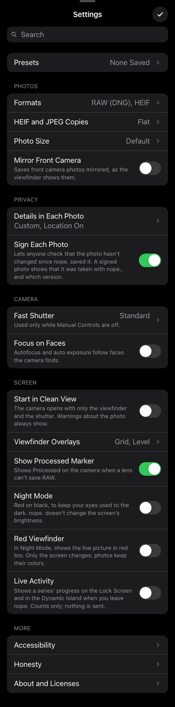


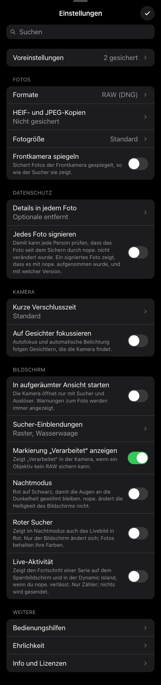

Search

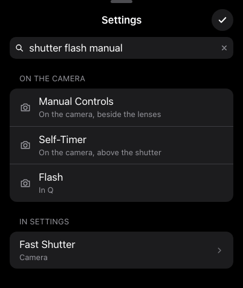
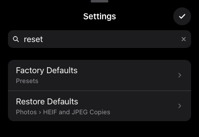
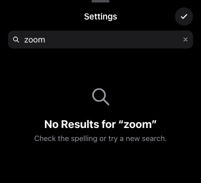
Pages

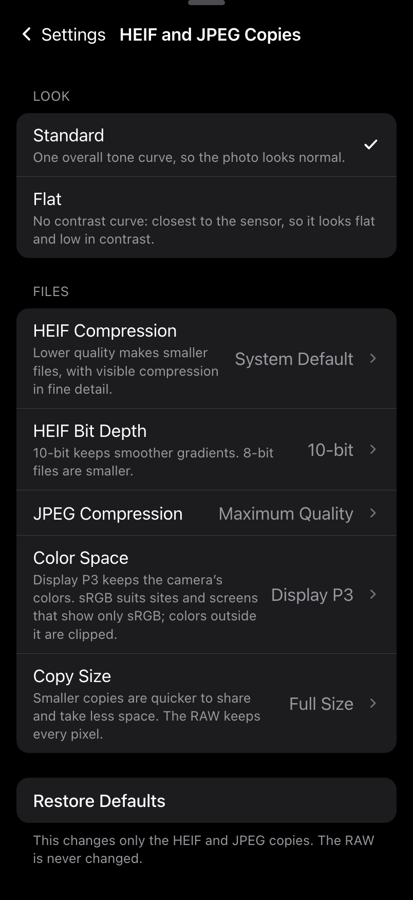
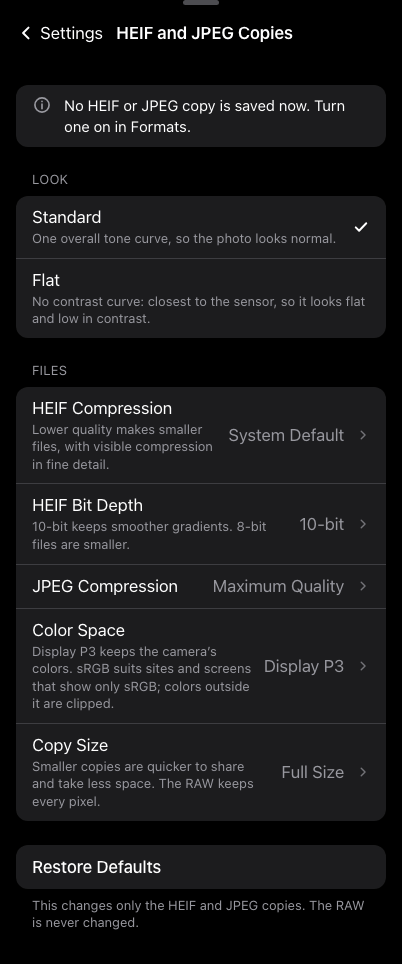

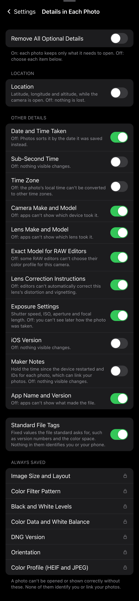
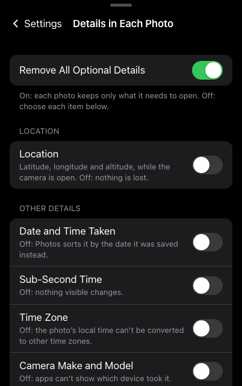

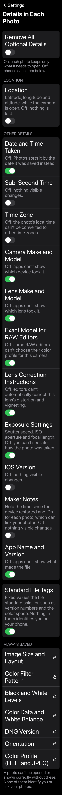
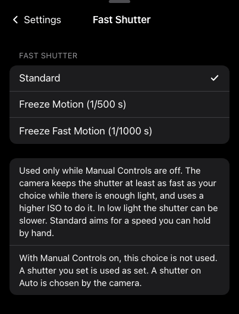

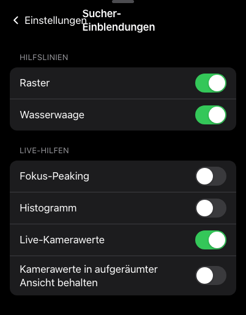
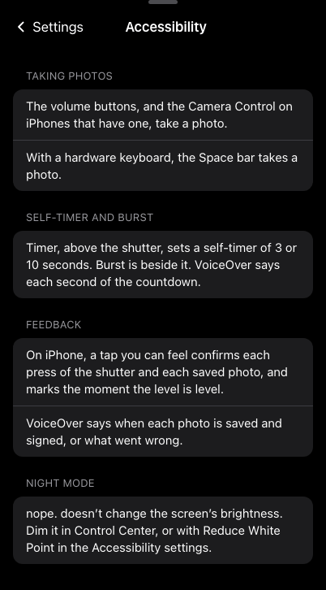
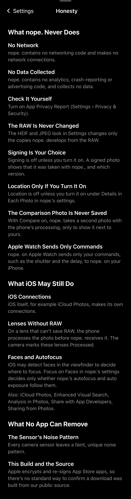
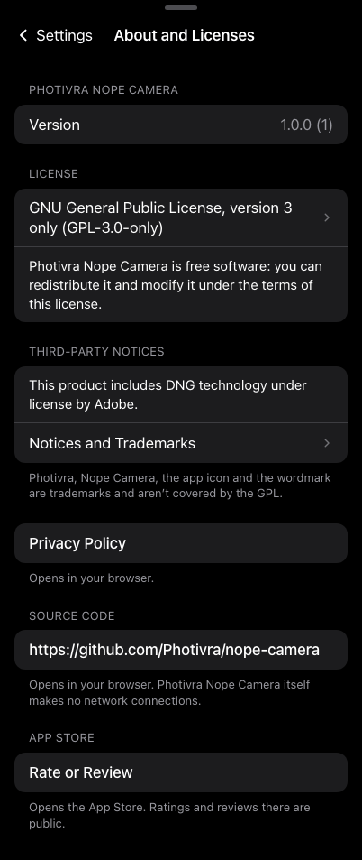
On other devices
iPad and the iPhone Duo inner display: a single-column popover, 480 × 720 pt at most, from the Settings button; a sheet in night mode. Compact-width windows (iPhone, the Duo outer display, Split View and Slide Over): a sheet from Q. The list and the pages are the same everywhere. Drawn in iPad, iPhone Duo and Layouts (sideways, and the Lock Screen camera). The Apple Watch app has no settings.